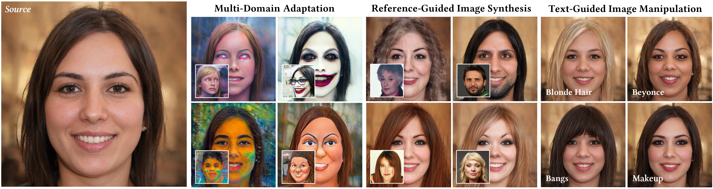
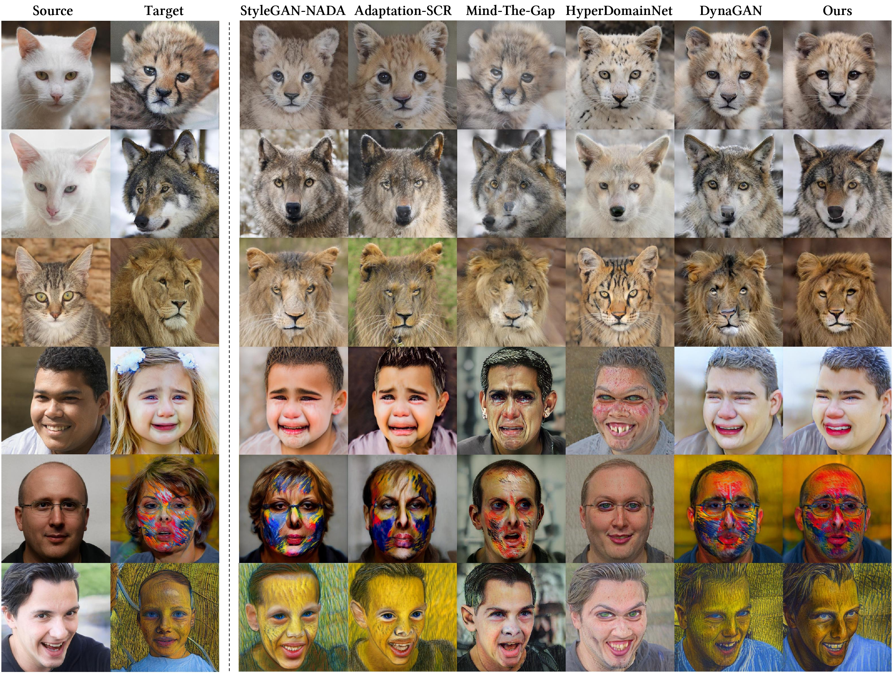
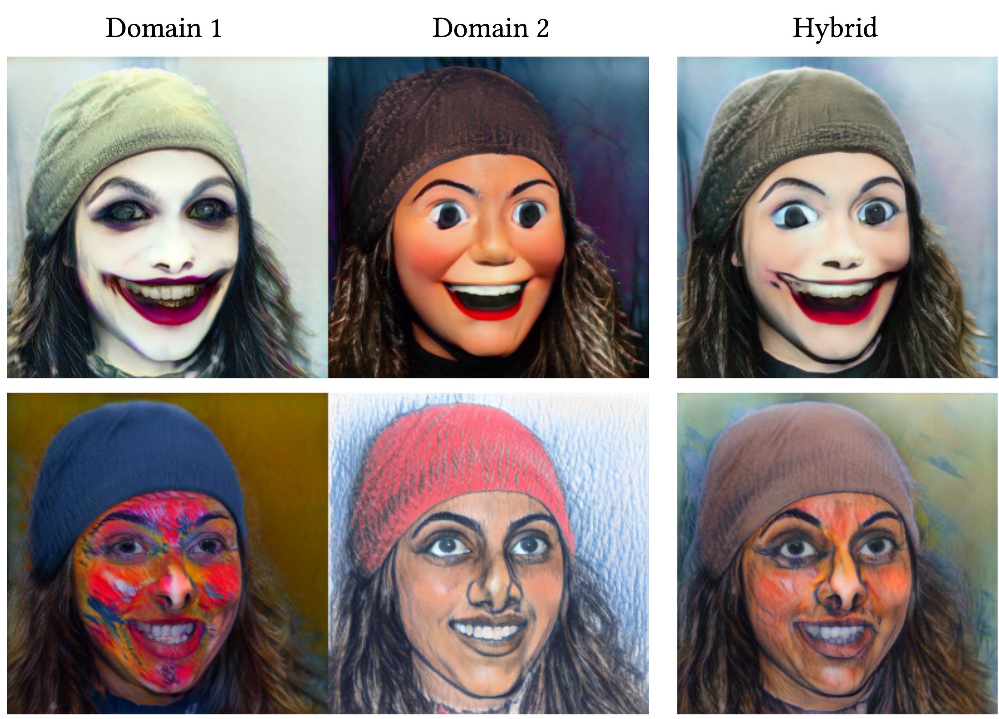
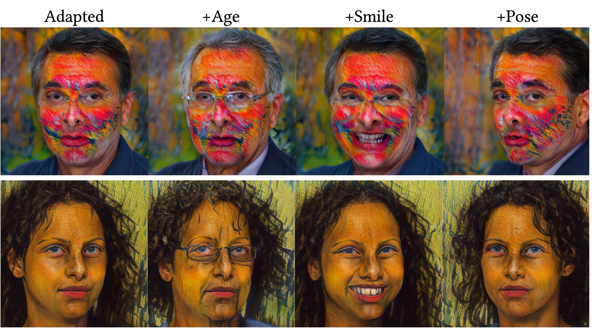
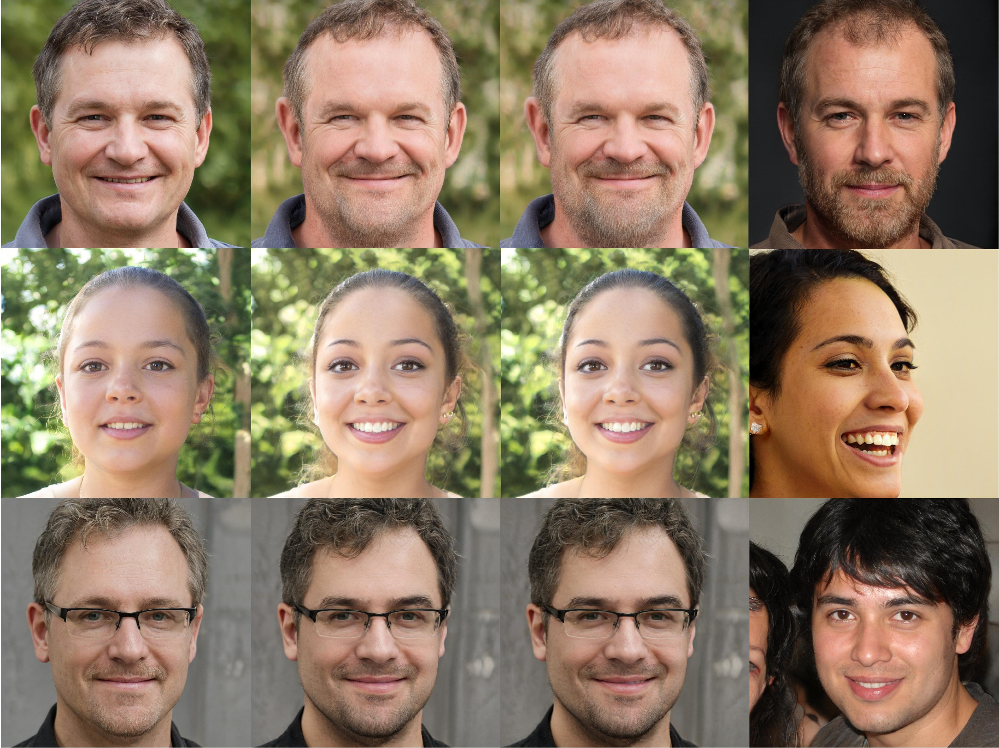

1. HyperGAN-CLIP ApplicationsHyperGAN-CLIP and its Applications. Introducing HyperGAN-CLIP, a flexible framework that enhances the capabilities of a pre-trained StyleGAN model for a multitude of tasks, including multiple domain one-shot adaptation, reference-guided image synthesis and text-guided image manipulation. Our method pushes the boundaries of image synthesis and editing, enabling users to create diverse and high-quality images with remarkable ease and precision. |
|||||||||||
2. Qualitative Comparisons - Domain AdaptationComparison against the state-of-the-art few-shot domain adaptation methods. Our proposed HyperGAN-CLIP model outperforms competing methods in accurately capturing the visual characteristics of the target domains. |
|||||||||||
3. Domain MixingDomain mixing. Our approach can fuse multiple domains to create novel compositions. By averaging and re-scaling the CLIP embeddings of two target domains, we can generate images that blend characteristics from both. |
|||||||||||
4. Semantic Editing in Target DomainsSemantic editing in target domains. Since latent mapper is kept intact, our approach allows for using existing latent space discovery methods to perform semantic edits. We manipulate two sample face images from adapted domains by playing with age, smile, and pose using InterfaceGAN. |
|||||||||||
5. Qualitative Comparisons - Reference-Guided Image Synthesis
Comparison with state-of-the-art reference-guided image synthesis approaches. Our approach effectively transfers the style of the target image to the source image while effectively preserving identity compared to competing methods. |
|||||||||||
6. Reference-Guided Synthesis with Mixed EmbeddingsReference-guided image synthesis with mixed embeddings. Each row shows the input image, the initial result with the CLIP image embedding, the refined result with a mixed embedding that incorporates the target attribute with α=0.5, and the reference image, respectively. Target text attributes are beard (top row), black hair (middle row), and smiling (bottom row). Incorporating mixed modality embeddings results in more accurate and detailed image modifications. |
|||||||||||
7. Qualitative Comparisons - Text-Guided Image Manipulation
Comparisons with state-of-the-art text-guided image manipulation methods. Our model shows remarkable versality in manipulating images across a diverse range of textual descriptions. The results vividly illustrate our model's ability to accurately apply changes based on target descriptions encompassing both single and multiple attributes. Compared to the competing approaches, our model preserves the identity of the input much better while successfully executing the desired manipulations. |
Contact
For any questions, please contact Abdul Basit Anees at abdulbasitanees98@gmail.com.